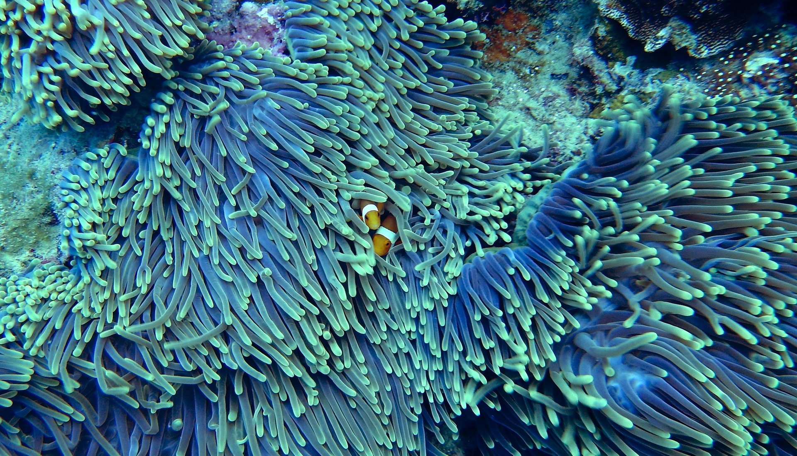

"Climate change is a long-term change in the average weather patterns that have come to define Earth’s local, regional and global climates. These changes have a broad range of observed effects that are synonymous with the term." - NASA

Temperature shifts have been occuring since Earth's beginnings. Some claim that climate change is part of the natural cycle.
While that may be true to an extent, Climate Change mostly came to be because of human activities. Human activities include, but are not limited to: The burning of fossil fuels, cutting down forests, development, overconsumption, manufacturing, and more.
These activities produce greenhouse gases that blanket the Earth's surface. The main gasses responsible are Carbon Dioxide, Nitrous Oxide, and Methane. Greenhouse gases absorb and emit radiant energy like the Sun's heat. This process is commonly known as the greenhouse effect and it results in warmer temperatures.
Climate change is impacting all sectors of society. The changes in weather and temperatures can cause injuries, indirect, and direct deaths.
The most vulnerable groups are people with prexisting health conditions, children, the elderly, and marginalized communities. These groups do not have access to right care. They are more exposed to the harmful greenhouse gases.
The World Health Organization states, "Between 2030 and 2050, climate change is expected to cause approximately 250 000 additional deaths per year from malnutrition, malaria, diarrhoea and heat stress alone. The direct damage costs to health are estimated to be between US$ 2–4 billion per year by 2030."
Climate change also affects plants and animals. Animals need specific climate conditions in order to thrive. Many species are responding to warmer temperatures by moving to cooler locations. As for plants, warm water has already caused damage to corals in different parts of the world.